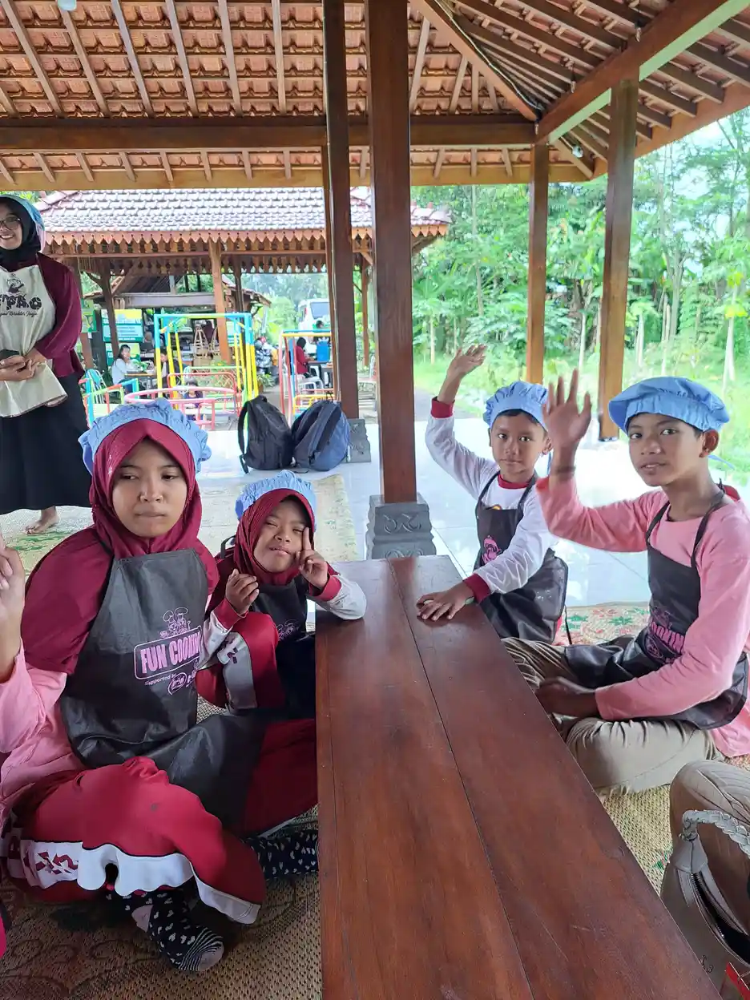

Shadow teacher adalah guru pendamping khusus yang bertugas mendampingi anak berkebutuhan khusus (ABK) secara individual selama proses belajar mengajar di sekolah. Istilah "shadow" sendiri berasal dari bahasa Inggris yang berarti "bayangan", menggambarkan bagaimana seorang shadow teacher selalu berada di sisi anak didiknya, layaknya bayangan yang setia menemani setiap langkah.
Di era pendidikan inklusif saat ini, keberadaan shadow teacher menjadi semakin penting. Semakin banyak sekolah reguler yang membuka pintu bagi anak berkebutuhan khusus untuk belajar bersama anak-anak lainnya. Namun, tanpa pendampingan yang tepat, anak-anak ini bisa kesulitan mengikuti ritme pembelajaran di kelas. Di sinilah peran shadow teacher menjadi krusial.
Di Yayasan Ukhuwah Kaffah Amanatullah (YUKA), kami menyaksikan langsung betapa besar dampak kehadiran pendamping yang tepat bagi perkembangan anak berkebutuhan khusus. Melalui Sekolah Inklusi Taruna Imani di Sleman, Yogyakarta, kami telah mendampingi berbagai anak dengan kebutuhan khusus dan memahami bahwa setiap anak memiliki potensi luar biasa yang menunggu untuk dibantu berkembang.
Artikel ini akan membahas secara lengkap tentang apa itu shadow teacher, peran dan tugasnya, kualifikasi yang dibutuhkan, hingga prospek karir dan gaji shadow teacher di Indonesia. Jika Anda seorang orang tua yang sedang mencari pendamping untuk anak Anda, atau seseorang yang tertarik menjadi shadow teacher, panduan ini akan memberikan gambaran menyeluruh yang Anda butuhkan.
Daftar Isi
Apa Itu Shadow Teacher?
Shadow teacher adalah seorang tenaga pendidik atau pendamping profesional yang ditugaskan untuk mendampingi satu anak berkebutuhan khusus secara individual di lingkungan sekolah. Pendampingan ini dilakukan selama jam sekolah berlangsung, di mana shadow teacher duduk bersama anak di kelas dan membantu anak mengikuti proses pembelajaran bersama teman-teman seusianya.
Konsep shadow teacher berakar dari filosofi pendidikan inklusi, yaitu keyakinan bahwa setiap anak, tanpa memandang kondisi dan kemampuannya, berhak mendapatkan pendidikan yang berkualitas di lingkungan yang sama. Dalam sistem pendidikan inklusi, anak berkebutuhan khusus belajar di sekolah reguler bersama anak-anak pada umumnya. Shadow teacher menjadi jembatan yang menghubungkan kebutuhan khusus anak dengan tuntutan kurikulum dan lingkungan sekolah.
Perlu dipahami bahwa shadow teacher bukan pengganti guru kelas. Shadow teacher bekerja sama dengan guru kelas untuk memastikan anak berkebutuhan khusus dapat berpartisipasi secara optimal dalam proses belajar. Shadow teacher juga bukan pengasuh atau babysitter. Tujuan utama seorang shadow teacher adalah membantu anak mengembangkan kemandirian, sehingga secara bertahap anak semakin tidak bergantung pada pendampingan.
Siapa Saja yang Membutuhkan Shadow Teacher?
Tidak semua anak berkebutuhan khusus memerlukan shadow teacher. Kebutuhan akan pendamping ini bergantung pada tingkat kebutuhan anak dan kemampuannya untuk mengikuti pembelajaran secara mandiri. Beberapa kondisi anak yang umumnya membutuhkan shadow teacher antara lain:
- Anak dengan autisme (ASD) - terutama yang memiliki kesulitan dalam komunikasi sosial, memahami instruksi verbal, atau mengelola perubahan rutinitas di sekolah.
- Anak dengan ADHD - yang memerlukan bantuan untuk tetap fokus, mengikuti instruksi bertahap, dan mengelola perilaku impulsif selama jam belajar.
- Anak dengan keterlambatan perkembangan global - yang membutuhkan pendampingan untuk memahami materi pelajaran yang disesuaikan dengan kemampuannya.
- Anak dengan gangguan perilaku - yang perlu didampingi dalam mengelola emosi dan berinteraksi secara tepat dengan guru serta teman sebaya.
- Anak dengan kesulitan belajar spesifik - seperti disleksia, disgrafia, atau diskalkulia yang memerlukan pendekatan pembelajaran khusus.
Keputusan untuk menyediakan shadow teacher biasanya dibuat bersama antara orang tua, pihak sekolah, dan profesional terkait (psikolog atau terapis anak). Beberapa sekolah inklusi bahkan mewajibkan kehadiran shadow teacher sebagai syarat penerimaan ABK agar proses pembelajaran di kelas tetap berjalan lancar untuk semua siswa.

Peran dan Tugas Shadow Teacher di Sekolah
Peran shadow teacher sangat beragam dan melampaui sekadar "menemani anak di kelas". Seorang shadow teacher yang baik menjalankan berbagai fungsi yang saling berkaitan untuk mendukung perkembangan anak secara menyeluruh. Berikut adalah peran dan tugas utama shadow teacher yang perlu Anda ketahui.
1. Pendampingan Akademik
Tugas shadow teacher yang paling terlihat adalah membantu anak mengikuti kegiatan belajar mengajar di kelas. Dalam praktiknya, pendampingan akademik ini meliputi:
- Menerjemahkan instruksi guru ke dalam bahasa atau format yang lebih mudah dipahami anak. Misalnya, memecah instruksi panjang menjadi langkah-langkah kecil yang sederhana.
- Menyesuaikan materi pelajaran sesuai dengan tingkat kemampuan anak, tanpa mengubah esensi dari materi yang diajarkan guru kelas.
- Membantu anak mengerjakan tugas dengan memberikan petunjuk atau prompt yang bertahap, mulai dari bantuan penuh hingga bantuan minimal seiring perkembangan anak.
- Menggunakan alat bantu visual seperti jadwal bergambar, kartu instruksi, atau media pembelajaran lainnya yang sesuai dengan gaya belajar anak.
- Memantau pemahaman anak terhadap materi dan melaporkan kepada guru kelas jika ada area yang perlu penanganan lebih lanjut.
2. Pengelolaan Perilaku
Banyak anak berkebutuhan khusus menghadapi tantangan dalam mengelola perilaku mereka di lingkungan sekolah. Shadow teacher berperan penting dalam hal ini melalui:
- Menerapkan strategi manajemen perilaku yang telah disepakati bersama orang tua dan profesional terkait, seperti teknik reinforcement positif atau token economy.
- Mencegah terjadinya perilaku yang mengganggu dengan mengenali tanda-tanda awal (antecedent) dan melakukan intervensi sebelum perilaku terjadi.
- Menyediakan ruang tenang atau waktu istirahat sementara (break time) ketika anak mengalami overstimulasi atau tantrum.
- Mengajarkan strategi regulasi diri secara bertahap, seperti teknik pernapasan, menghitung mundur, atau menggunakan alat sensori untuk menenangkan diri.
3. Fasilitasi Interaksi Sosial
Salah satu tujuan utama pendidikan inklusi adalah memberikan kesempatan bagi ABK untuk berinteraksi dengan teman sebaya. Shadow teacher memfasilitasi hal ini dengan cara:
- Mendorong anak untuk berinteraksi dengan teman-teman sekelasnya, bukan mengisolasi anak dari lingkungan sosialnya.
- Mengajarkan keterampilan sosial secara situasional, seperti cara menyapa, berbagi, menunggu giliran, dan merespons ajakan bermain.
- Menjadi mediator dalam situasi konflik atau kesalahpahaman antara anak dengan teman-temannya.
- Membantu teman-teman sekelas memahami cara berinteraksi yang tepat dengan anak berkebutuhan khusus, tanpa membuat anak merasa berbeda atau terasingkan.
4. Koordinasi dan Komunikasi
Shadow teacher juga berperan sebagai penghubung antara berbagai pihak yang terlibat dalam pendidikan anak:
- Berkomunikasi secara rutin dengan guru kelas mengenai kemajuan anak, kendala yang dihadapi, dan penyesuaian yang mungkin diperlukan.
- Membuat laporan perkembangan yang detail dan terstruktur untuk orang tua, mencakup aspek akademik, perilaku, dan sosial.
- Berkoordinasi dengan terapis atau psikolog anak untuk memastikan program di sekolah sejalan dengan program terapi yang sedang dijalani anak. Baca lebih lanjut tentang terapi okupasi yang sering menjadi bagian dari program penanganan ABK.
- Menghadiri pertemuan evaluasi bersama tim pendukung anak (orang tua, guru, terapis, psikolog) untuk merancang dan menyesuaikan program pendampingan.
5. Pengembangan Kemandirian Anak
Tujuan akhir dari pendampingan shadow teacher adalah membantu anak menjadi semakin mandiri. Oleh karena itu, shadow teacher yang baik akan:
- Mengurangi tingkat bantuan secara bertahap (fading) seiring dengan meningkatnya kemampuan anak.
- Mengajarkan keterampilan hidup sehari-hari seperti menata peralatan sekolah, makan sendiri, dan menggunakan toilet secara mandiri.
- Membangun rasa percaya diri anak dengan memberikan apresiasi atas setiap kemajuan, sekecil apa pun.
- Menetapkan target kemandirian yang realistis dan terukur bersama orang tua dan guru kelas.
Penting untuk Diingat
Shadow teacher yang efektif adalah yang secara bertahap membuat dirinya "tidak dibutuhkan lagi" oleh anak. Keberhasilan seorang shadow teacher diukur bukan dari seberapa bergantung anak pada pendampingnya, melainkan dari seberapa mandiri anak menjadi seiring berjalannya waktu.
Kualifikasi dan Kompetensi Shadow Teacher
Menjadi shadow teacher membutuhkan kombinasi antara pengetahuan akademis, keterampilan praktis, dan karakter personal yang tepat. Berikut adalah kualifikasi dan kompetensi yang diharapkan dari seorang shadow teacher profesional.
Kualifikasi Pendidikan
Meskipun belum ada regulasi baku di Indonesia yang mengatur persyaratan pendidikan formal untuk shadow teacher, beberapa latar belakang pendidikan yang sangat relevan meliputi:
- S1 Pendidikan Luar Biasa (PLB) - merupakan latar belakang yang paling ideal karena langsung mempelajari metode pengajaran untuk ABK.
- S1 Psikologi - memberikan pemahaman mendalam tentang perkembangan anak, gangguan perkembangan, dan teknik modifikasi perilaku.
- S1 Pendidikan Anak Usia Dini (PAUD) - relevan terutama untuk mendampingi ABK di jenjang TK dan SD kelas awal.
- S1 Pendidikan (jurusan apa pun) dengan tambahan pelatihan khusus tentang penanganan ABK.
- D3/S1 Terapi Okupasi atau Terapi Wicara - memberikan keunggulan dalam memahami kebutuhan sensori dan komunikasi anak.
Kompetensi Teknis
Selain latar belakang pendidikan, seorang shadow teacher perlu menguasai beberapa kompetensi teknis berikut:
- Pemahaman tentang berbagai jenis kebutuhan khusus - termasuk autisme, ADHD, down syndrome, cerebral palsy, dan keterlambatan perkembangan lainnya.
- Penguasaan teknik modifikasi perilaku - seperti Applied Behavior Analysis (ABA), Positive Behavior Support (PBS), dan teknik prompt-fading.
- Kemampuan membuat dan melaksanakan Program Pembelajaran Individual (PPI) - dokumen rencana pembelajaran yang disesuaikan dengan kebutuhan spesifik anak.
- Keterampilan observasi dan pencatatan - mampu mendokumentasikan perilaku dan perkembangan anak secara objektif dan sistematis.
- Pengetahuan tentang alat bantu pembelajaran - termasuk media visual, alat sensori, dan teknologi assistif yang mendukung proses belajar anak.
- Kemampuan komunikasi augmentatif dan alternatif (AAC) - untuk anak-anak yang memiliki hambatan dalam komunikasi verbal.
Karakter dan Soft Skills
Dalam pengalaman kami di YUKA, karakter personal seorang shadow teacher sama pentingnya dengan kompetensi teknisnya. Seorang shadow teacher yang ideal memiliki:
- Kesabaran yang luar biasa - kemajuan anak berkebutuhan khusus seringkali lambat dan tidak linear. Dibutuhkan kesabaran untuk terus mendampingi tanpa merasa frustrasi.
- Empati dan kepekaan - kemampuan untuk memahami perasaan dan perspektif anak, bahkan ketika anak belum mampu mengungkapkannya secara verbal.
- Fleksibilitas dan kreativitas - setiap hari bisa menghadirkan tantangan baru. Shadow teacher perlu cepat beradaptasi dan menemukan solusi kreatif.
- Ketegasan yang penuh kasih - mampu menegakkan aturan dan batasan yang diperlukan untuk perkembangan anak, tanpa menggunakan kekerasan atau intimidasi.
- Kemampuan kerja sama tim - shadow teacher tidak bekerja sendirian, melainkan sebagai bagian dari tim yang melibatkan guru kelas, orang tua, dan profesional lainnya.
- Kemauan untuk terus belajar - dunia pendidikan khusus terus berkembang. Shadow teacher yang baik selalu berusaha memperbarui pengetahuan dan keterampilannya.

Perbedaan Shadow Teacher, GPK, dan Terapis
Dalam dunia pendidikan anak berkebutuhan khusus, ada beberapa istilah yang seringkali membingungkan bagi orang tua maupun masyarakat umum. Memahami perbedaan antara shadow teacher, Guru Pendamping Khusus (GPK), dan terapis sangat penting agar setiap pihak dapat menjalankan perannya dengan tepat.
Shadow Teacher
Shadow teacher, seperti yang telah dibahas, adalah pendamping individual yang fokus pada satu anak. Karakteristik utama shadow teacher meliputi:
- Mendampingi satu anak secara penuh selama jam sekolah.
- Berada di dalam kelas bersama anak dan guru kelas.
- Biasanya dibiayai oleh orang tua anak atau yayasan pengelola.
- Tidak memiliki standar sertifikasi nasional yang baku.
- Fokus pada pendampingan praktis di lapangan, bukan perancangan kurikulum.
Guru Pendamping Khusus (GPK)
GPK adalah tenaga pendidik resmi yang ditunjuk oleh sekolah atau dinas pendidikan untuk menangani ABK di sekolah inklusi. Berdasarkan Permendiknas No. 70 Tahun 2009, setiap sekolah inklusi idealnya memiliki minimal satu GPK. Perbedaan GPK dengan shadow teacher antara lain:
- Menangani beberapa ABK sekaligus di satu sekolah, bukan hanya satu anak.
- Merancang Program Pembelajaran Individual (PPI) dan melakukan asesmen kebutuhan anak.
- Merupakan bagian dari struktur resmi sekolah dan digaji oleh pemerintah atau sekolah.
- Umumnya memiliki latar belakang pendidikan S1 Pendidikan Luar Biasa.
- Berperan sebagai koordinator antara guru kelas, orang tua, dan pihak terkait.
Untuk memahami lebih lanjut tentang sistem pendidikan khusus di Indonesia, Anda bisa membaca artikel kami tentang Sekolah Luar Biasa (SLB) dan perbedaannya dengan sekolah inklusi.
Terapis
Terapis (seperti terapis okupasi, terapis wicara, atau psikolog klinis anak) memiliki peran yang berbeda dari shadow teacher dan GPK. Berikut perbedaannya:
- Melakukan terapi spesifik berdasarkan diagnosis dan kebutuhan klinis anak.
- Sesi terapi biasanya dilakukan di ruang khusus (klinik atau ruang terapi), bukan di kelas reguler.
- Memiliki lisensi dan sertifikasi profesional yang diakui secara nasional.
- Frekuensi pertemuan biasanya 1-3 kali seminggu dengan durasi tertentu, bukan sepanjang jam sekolah.
- Merancang program intervensi klinis dan memberikan rekomendasi kepada orang tua serta tim pendidikan.
Kolaborasi yang Ideal
Dalam praktik terbaik, shadow teacher, GPK, dan terapis bekerja secara kolaboratif. Terapis memberikan program dan strategi intervensi. GPK merancang penyesuaian kurikulum. Shadow teacher menerapkan semua itu di lapangan, di dalam kelas, setiap hari. Orang tua menjadi mitra utama yang menjembatani semua pihak ini di rumah.
Cara Menjadi Shadow Teacher
Jika Anda tertarik untuk berkarir sebagai shadow teacher, ada beberapa langkah yang bisa Anda tempuh. Meskipun belum ada jalur formal yang baku di Indonesia, berikut adalah panduan langkah demi langkah yang dapat Anda ikuti.
Langkah 1: Lengkapi Pendidikan Formal
Langkah pertama adalah memiliki latar belakang pendidikan yang relevan. Jika Anda masih menempuh pendidikan, pilihlah jurusan yang berkaitan dengan pendidikan khusus, psikologi, atau pendidikan anak usia dini. Jika Anda sudah lulus dari jurusan lain, jangan khawatir. Banyak shadow teacher sukses yang berasal dari berbagai latar belakang pendidikan, asalkan mau belajar dan mengikuti pelatihan tambahan.
Langkah 2: Ikuti Pelatihan Khusus
Pelatihan khusus sangat penting untuk membekali Anda dengan pengetahuan dan keterampilan praktis yang dibutuhkan. Beberapa jenis pelatihan yang disarankan meliputi:
- Pelatihan dasar penanganan ABK - mencakup pengenalan berbagai jenis kebutuhan khusus dan cara menanganinya.
- Pelatihan Applied Behavior Analysis (ABA) - teknik modifikasi perilaku yang paling banyak digunakan dalam penanganan ABK, terutama anak autis.
- Pelatihan sensory integration - untuk memahami dan menangani kebutuhan sensori anak.
- Workshop penyusunan PPI - kemampuan merancang program pembelajaran individual.
- Pelatihan komunikasi augmentatif - untuk mendampingi anak dengan hambatan komunikasi verbal.
Pelatihan-pelatihan ini bisa Anda dapatkan melalui universitas, yayasan yang bergerak di bidang ABK, atau lembaga pelatihan profesional. Beberapa di antaranya juga sudah tersedia dalam format online.
Langkah 3: Lakukan Magang atau Praktik Lapangan
Teori saja tidak cukup. Pengalaman langsung berinteraksi dengan anak berkebutuhan khusus sangat krusial untuk membangun keterampilan dan kepercayaan diri Anda. Beberapa cara untuk mendapatkan pengalaman lapangan:
- Menjadi relawan di yayasan atau sekolah luar biasa. Baca panduan kami tentang cara memilih yayasan anak berkebutuhan khusus yang terpercaya.
- Magang di sekolah inklusi yang sudah memiliki program pendampingan ABK yang terstruktur.
- Menjadi asisten terapis di klinik terapi anak untuk belajar langsung dari profesional berpengalaman.
- Mengikuti program pendampingan di lembaga atau yayasan seperti YUKA yang aktif dalam pendidikan inklusif.
Langkah 4: Dapatkan Sertifikasi
Meskipun sertifikasi belum menjadi persyaratan wajib, memiliki sertifikat pelatihan akan meningkatkan kredibilitas Anda di mata orang tua dan sekolah. Beberapa sertifikasi yang bisa Anda kejar:
- Sertifikat pelatihan shadow teacher dari lembaga terakreditasi.
- Sertifikat Registered Behavior Technician (RBT) untuk penguasaan teknik ABA.
- Sertifikat pelatihan penanganan ABK dari universitas atau lembaga pendidikan.
- Sertifikat workshop sensory integration atau terapi bermain.
Langkah 5: Bangun Jaringan dan Reputasi
Setelah memiliki kompetensi yang memadai, langkah selanjutnya adalah membangun jaringan profesional dan reputasi yang baik:
- Bergabung dengan komunitas shadow teacher atau komunitas pendidik ABK, baik secara offline maupun online.
- Daftarkan diri di sekolah inklusi atau yayasan yang membutuhkan shadow teacher.
- Bangun portofolio yang mencakup pengalaman kerja, pelatihan yang pernah diikuti, dan testimoni dari orang tua atau institusi.
- Terus tingkatkan kompetensi melalui pelatihan lanjutan, seminar, dan membaca literatur terbaru tentang pendidikan khusus.

Gaji dan Prospek Karir Shadow Teacher
Pertanyaan tentang gaji shadow teacher sering muncul, baik dari orang yang ingin berkarir di bidang ini maupun dari orang tua yang ingin mengetahui perkiraan biaya pendampingan untuk anak mereka. Berikut adalah gambaran realistis mengenai gaji shadow teacher di Indonesia berdasarkan data yang kami kumpulkan.
Kisaran Gaji Shadow Teacher
| Jenis Pekerjaan | Kisaran Gaji | Keterangan |
|---|---|---|
| Shadow teacher di sekolah swasta | Rp2.000.000 - Rp5.000.000/bulan | Tergantung kota, reputasi sekolah, dan pengalaman |
| Shadow teacher freelance | Rp75.000 - Rp200.000/jam | Per sesi pendampingan, biaya ditanggung orang tua |
| Shadow teacher di yayasan | Rp1.500.000 - Rp3.500.000/bulan | Biasanya termasuk tunjangan dan pelatihan berkala |
Beberapa faktor yang memengaruhi besaran gaji shadow teacher antara lain:
- Lokasi - shadow teacher di kota besar seperti Jakarta, Surabaya, atau Bandung umumnya menerima gaji lebih tinggi dibandingkan di kota kecil.
- Pengalaman dan kualifikasi - shadow teacher dengan sertifikasi dan pengalaman bertahun-tahun bisa mendapatkan bayaran lebih tinggi.
- Tingkat kebutuhan anak - anak dengan kebutuhan yang lebih kompleks biasanya memerlukan shadow teacher dengan kompetensi lebih tinggi, sehingga biaya pendampingannya juga lebih besar.
- Jenjang sekolah - pendampingan di jenjang SD umumnya berbeda biayanya dengan jenjang SMP atau SMA.
- Jam kerja - shadow teacher yang bekerja penuh waktu (full day) tentu mendapatkan kompensasi berbeda dengan yang hanya bekerja paruh waktu.
Prospek Karir Shadow Teacher
Prospek karir shadow teacher di Indonesia cukup menjanjikan, didorong oleh beberapa faktor berikut:
- Meningkatnya kesadaran tentang pendidikan inklusi - semakin banyak orang tua yang menginginkan anak mereka bersekolah di sekolah reguler dengan pendampingan yang tepat.
- Kebijakan pemerintah yang mendukung inklusi - Permendiknas No. 70 Tahun 2009 tentang Pendidikan Inklusif mendorong semakin banyak sekolah yang menerima ABK.
- Meningkatnya jumlah diagnosis ABK - dengan semakin baiknya deteksi dini, semakin banyak anak yang teridentifikasi membutuhkan pendampingan khusus.
- Belum tersedianya supply yang memadai - jumlah shadow teacher yang berkualitas masih jauh dari cukup dibandingkan dengan permintaan.
Seorang shadow teacher juga bisa mengembangkan karirnya ke beberapa arah, seperti:
- Menjadi koordinator program inklusi di sekolah.
- Menjadi konsultan pendidikan ABK yang memberikan pelatihan dan pendampingan kepada sekolah-sekolah.
- Melanjutkan pendidikan ke jenjang magister dan menjadi akademisi di bidang pendidikan khusus.
- Membuka lembaga pelatihan shadow teacher untuk mencetak tenaga pendamping ABK yang berkualitas.
- Beralih menjadi terapis anak dengan menempuh pendidikan dan sertifikasi tambahan.
"Menjadi shadow teacher bukan sekadar pekerjaan. Ini adalah panggilan hati untuk mendampingi anak-anak istimewa menemukan jalan mereka sendiri. Setiap kemajuan kecil yang mereka capai adalah kebahagiaan yang tak ternilai."
Pengalaman YUKA dalam Pendampingan ABK di Sekolah
Di Yayasan Ukhuwah Kaffah Amanatullah (YUKA), pendampingan anak berkebutuhan khusus bukan sekadar program, melainkan bagian dari misi utama kami. Melalui Sekolah Inklusi Taruna Imani yang berlokasi di Sleman, Yogyakarta, kami telah mendampingi puluhan anak dengan berbagai kebutuhan khusus untuk bisa belajar, tumbuh, dan berkembang bersama teman-teman seusianya.
Pendekatan Pendampingan di YUKA
Kami menerapkan pendekatan pendampingan yang holistik, artinya tidak hanya fokus pada aspek akademik, tetapi juga mencakup perkembangan sosial, emosional, spiritual, dan keterampilan hidup anak. Beberapa prinsip yang kami pegang dalam pendampingan ABK di YUKA meliputi:
- Setiap anak adalah individu unik - program pendampingan dirancang secara individual, disesuaikan dengan kekuatan, kebutuhan, dan minat setiap anak.
- Kolaborasi dengan orang tua - kami percaya bahwa peran orang tua sangat krusial dalam keberhasilan pendampingan. Komunikasi rutin dan keterlibatan orang tua dalam program menjadi prioritas kami.
- Lingkungan yang aman dan menerima - kami menciptakan budaya sekolah yang inklusif, di mana setiap anak merasa diterima, dihargai, dan dicintai apa adanya.
- Pembelajaran berbasis aktivitas - kami banyak menggunakan pendekatan experiential learning, termasuk kegiatan memasak, bercocok tanam, seni, dan aktivitas outdoor yang membantu anak belajar melalui pengalaman langsung.
- Pendampingan berbasis nilai - sebagai yayasan yang berlandaskan nilai-nilai Islam, kami menanamkan akhlak dan karakter yang baik dalam setiap proses pendampingan.
Cerita dari Lapangan
Salah satu momen yang paling membekas bagi tim kami adalah ketika seorang anak dengan autisme yang awalnya tidak bisa berkomunikasi verbal, setelah mendapat pendampingan selama satu tahun, akhirnya mampu mengucapkan keinginannya sendiri kepada guru kelas tanpa bantuan pendamping. Saat itu, bukan hanya orang tuanya yang menangis bahagia, tetapi seluruh tim pendamping kami pun ikut terharu. Momen-momen seperti inilah yang menguatkan kami untuk terus berjuang mendampingi anak-anak istimewa ini.
Tantangan dan Pembelajaran
Tentu saja, perjalanan pendampingan ABK tidak selalu mulus. Kami menghadapi berbagai tantangan, mulai dari keterbatasan sumber daya, minimnya tenaga pendamping yang terlatih, hingga stigma masyarakat terhadap anak berkebutuhan khusus. Namun, setiap tantangan ini justru menjadi pembelajaran berharga bagi kami.
Kami belajar bahwa kesabaran dan konsistensi adalah kunci utama. Kami belajar bahwa setiap anak memiliki timeline perkembangannya sendiri, dan tugas kami adalah mendampingi, bukan memaksa. Kami juga belajar bahwa kerja sama tim yang solid, antara guru kelas, pendamping, terapis, dan orang tua, adalah fondasi keberhasilan program pendampingan.
Jika Anda adalah orang tua yang sedang mencari tempat pendidikan untuk anak berkebutuhan khusus, atau jika Anda tertarik untuk menjadi bagian dari tim pendamping kami, jangan ragu untuk menghubungi YUKA. Kami selalu terbuka untuk berdiskusi dan berbagi pengalaman.
FAQ Seputar Shadow Teacher
Berikut adalah beberapa pertanyaan yang paling sering diajukan tentang shadow teacher, beserta jawaban lengkapnya.
1. Apa itu shadow teacher?
Shadow teacher adalah guru pendamping khusus yang bertugas mendampingi anak berkebutuhan khusus (ABK) secara individual di lingkungan sekolah reguler atau inklusi. Shadow teacher membantu anak mengikuti proses pembelajaran, mengelola perilaku, dan mengembangkan kemandirian anak secara bertahap. Istilah ini berasal dari konsep "bayangan" yang selalu berada di sisi anak selama jam sekolah.
2. Apa saja tugas utama shadow teacher?
Tugas utama shadow teacher meliputi mendampingi anak selama kegiatan belajar mengajar, membantu anak memahami instruksi guru kelas, mengelola perilaku anak, memfasilitasi interaksi sosial dengan teman sebaya, membuat catatan perkembangan anak, serta berkomunikasi secara rutin dengan guru kelas dan orang tua mengenai kemajuan anak. Shadow teacher juga berperan dalam mengembangkan kemandirian anak secara bertahap.
3. Berapa gaji shadow teacher di Indonesia?
Gaji shadow teacher di Indonesia bervariasi tergantung lokasi, pengalaman, dan institusi tempat bekerja. Shadow teacher di sekolah swasta umumnya menerima Rp2.000.000 hingga Rp5.000.000 per bulan. Shadow teacher freelance mendapatkan Rp75.000 hingga Rp200.000 per jam sesi pendampingan. Sementara shadow teacher yang bekerja di yayasan menerima Rp1.500.000 hingga Rp3.500.000 per bulan. Besaran gaji juga dipengaruhi oleh kualifikasi pendidikan dan sertifikasi yang dimiliki.
4. Apa perbedaan shadow teacher dan guru pendamping khusus (GPK)?
Shadow teacher mendampingi satu anak secara individual dan fokus pada kebutuhan spesifik anak tersebut selama jam sekolah. Sementara GPK (Guru Pendamping Khusus) adalah tenaga pendidik yang ditunjuk sekolah untuk menangani beberapa ABK sekaligus, merancang program pembelajaran individual, dan berkoordinasi dengan semua pihak terkait pendidikan inklusif di sekolah. GPK merupakan bagian dari struktur resmi sekolah, sedangkan shadow teacher biasanya dibiayai langsung oleh orang tua.
5. Bagaimana cara menjadi shadow teacher?
Untuk menjadi shadow teacher, Anda perlu memiliki latar belakang pendidikan minimal S1, sebaiknya di bidang Pendidikan Luar Biasa, Psikologi, atau Pendidikan Anak Usia Dini. Selain itu, mengikuti pelatihan khusus penanganan ABK, magang atau praktik lapangan di sekolah inklusi atau yayasan ABK, serta memiliki sertifikasi terkait akan sangat membantu. Yang terpenting adalah memiliki kesabaran, empati, dan dedikasi tinggi terhadap perkembangan anak berkebutuhan khusus.